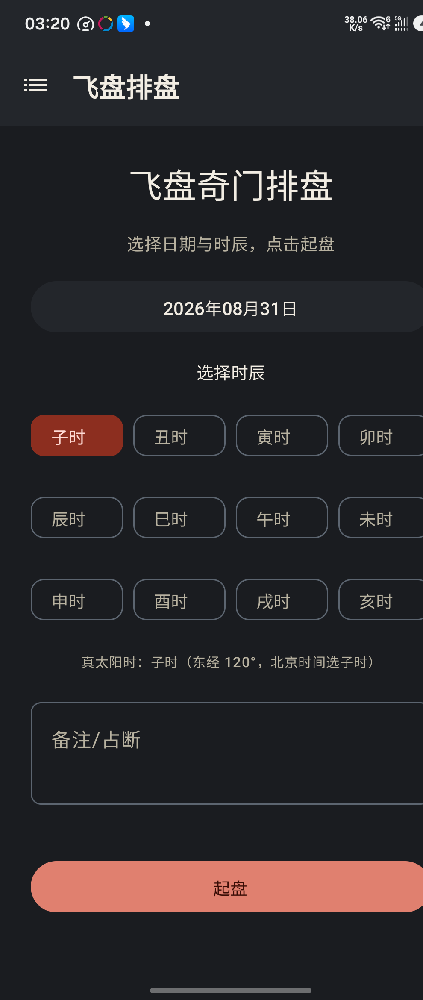
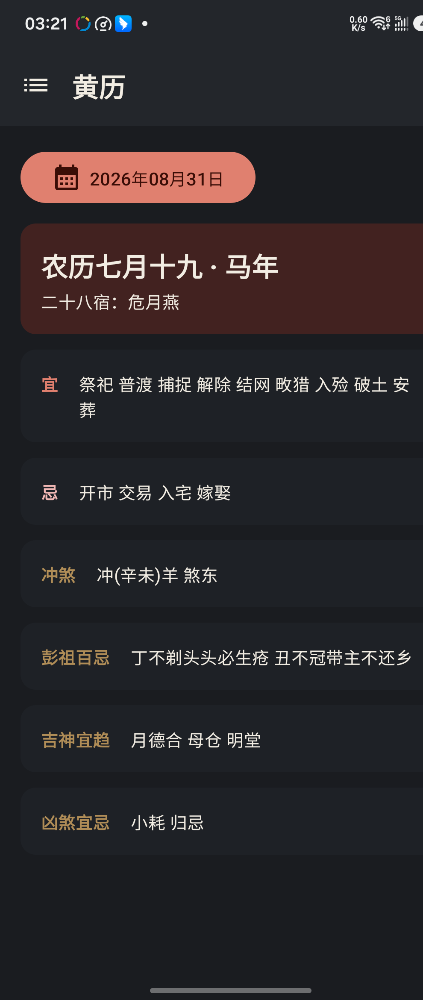

能 力
一盘在手，参断有据
🌀
飞盘排盘
定局、布盘、星门顺飞、暗干支，完整七步，值使飞宫法 · 符头定元。
🔍
格局检测
击刑、入墓、门迫、伏吟反吟、守门、空亡与正格干支组合，自动标注吉凶。
🔮
奇门演卦
星门演卦、门宫演卦，盘面星门叠成六爻卦象，多一层参断视角。
✨
玄鉴参断
接入大模型，起盘后一键参断吉凶，含思考过程与自备资料 skill。
🗂️
案例库
事项分类、反馈筛选、导入导出，断过的盘都有迹可循。
📖
内置教材
《奇门基础资料 2023版教》三卷内置，星门神释义随点随查。
玄鉴 · 玄鉴参断
以飞盘奇门断法为纲，佐以自备资料，为盘面参断吉凶。内置「占断思维纪律」「飞盘奇门规格」，亦可导入本地 skill。意见仅供参考，最终判断在人。
截 图
盘面一览



下 载
获取天禽
Android 6.0+ · 开源免费 · 无需注册